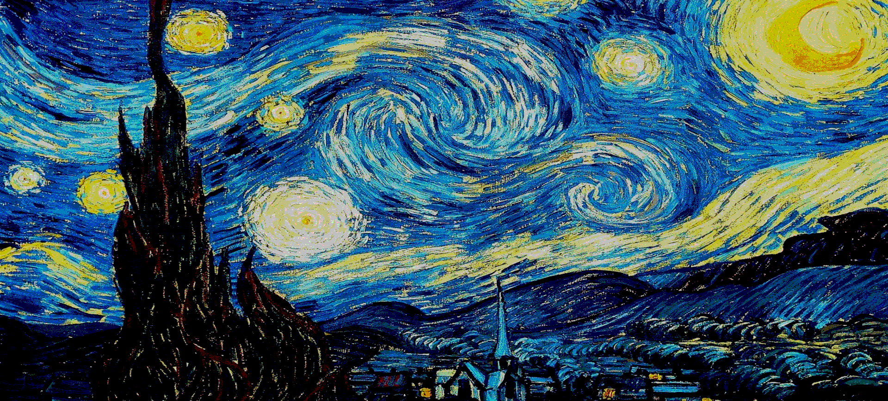

Project Overview
In this collaborative project with Yafira, I led the technical architecture and foundational development of an interactive visual effects application. The project focused on creating real-time pixel manipulation capabilities with an intuitive user interface for dynamic visual control.
My Role
I established the core code structure, implemented the pixel manipulation algorithms and real-time visual effects, and designed the interactive UI controls, while collaborating closely on integration and optimization throughout the development process.
Pixel Manipulation
Eight Distinct Visual Effects
Utilizes p5.js to manipulate pixels of Van Gogh's The Starry Night through eight distinct effects, each moving across the canvas in either inward or outward directions, creating a mesmerizing dance between the original artwork and its digital transformation.

Greyscale (Square Ripple)

Invert (Circular Ripple)

Cool Tones (Circular Ripple)

Black & White (Square Ripple)

Red-Green Gradient (Slow Circular Ripple)

Saturation Adjustment (Circular Ripple)

Color Shift (Circular Ripple)

Normal (Circular Ripple)
Performance & Timing
Optimized One-Minute Cycle
The entire cycle completes in exactly one minute, with the redGreenGradient effect moving notably slower than the others to create rhythmic variation.